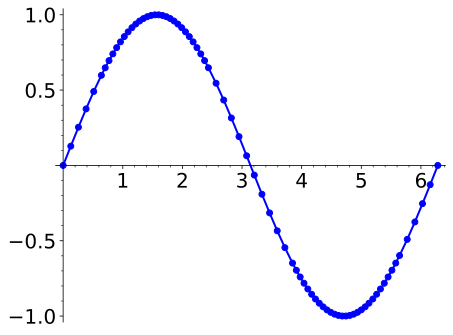
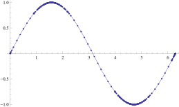

We have been learning how we can understand the behavior of a function based on its first and second derivatives. While we have been treating the properties of a function separately (increasing and decreasing, concave up and concave down, etc.), we combine them here to produce an accurate graph of the function without plotting lots of extraneous points.
Why bother? Graphing utilities are very accessible, whether on a computer, a hand-held calculator, or a smartphone. These resources are usually very fast and accurate. We will see that our method is not particularly fast — it will require time (but it is not hard). So again: why bother?
We are attempting to understand the behavior of a function \(f\) based on the information given by its derivatives. While all of a function's derivatives relay information about it, it turns out that “most” of the behavior we care about is explained by \(\fp\)and \(\fpp\text{.}\) Understanding the interactions between the graph of \(f\) and \(\fp\)and \(\fpp\)is important. To gain this understanding, one might argue that all that is needed is to look at lots of graphs. This is true to a point, but is somewhat similar to stating that one understands how an engine works after looking only at pictures. It is true that the basic ideas will be conveyed, but “hands-on” access increases understanding.
Key Idea 3.5.1 summarizes what we have learned so far that is applicable to sketching graphs of functions and gives a framework for putting that information together. It is followed by several examples.
Key Idea3.5.1.Curve Sketching.
To produce an accurate sketch a given function \(f\text{,}\) consider the following steps.
Find the domain of \(f\text{.}\) Generally, we assume that the domain is the entire real line then find restrictions, such as where a denominator is \(0\) or where negatives appear under the radical.
Find the critical values of \(f\text{.}\)
Find the possible points of inflection of \(f\text{.}\)
Find the location of any vertical asymptotes of \(f\) (usually done in conjunction with Item 1).
Consider the limits \(\lim\limits_{x\to-\infty}f(x)\) and \(\lim\limits_{x\to\infty}f(x)\) to determine the end behavior of the function.
Create a number line that includes all critical points, possible points of inflection, and locations of vertical asymptotes. For each interval created, determine whether \(f\) is increasing or decreasing, concave up or down.
Evaluate \(f\) at each critical point and possible point of inflection. Plot these points on a set of axes. Connect these points with curves exhibiting the proper concavity. Sketch asymptotes and \(x\) and \(y\) intercepts where applicable.
Example3.5.2.Curve sketching.
Use Key Idea 3.5.1 to sketch \(f(x) = 3x^3-10x^2+7x+5\text{.}\)
We place the values \(x=(10\pm\sqrt{37})/9\) and \(x=10/9\) on a number line, as shown in Figure 3.5.3. We mark each subinterval as increasing or decreasing, concave up or down, using the techniques used in Sections 3.3–3.4.
Evaluate \(f\) at each critical number and possible inflection point.
We plot the appropriate points on axes as shown in Figure 3.5.4.(a) and connect the points with straight lines (to show increasing/decreasig behavior). In Figure 3.5.4.(b) we adjust these lines to demonstrate the proper concavity. In Figure 3.5.4.(c) we show a graph of \(f\) drawn with a computer program, verifying the accuracy of our sketch.
In determining the domain, we assume it is all real numbers and look for restrictions. We find that at \(x=-2\) and \(x=3\text{,}\)\(f(x)\) is not defined. So the domain of \(f\) is \(D = \{ x \mid x\neq -2,3\}\text{.}\)
To find the critical values of \(f\text{,}\) we first find \(\fp(x)\text{.}\) Using the Quotient Rule, we find
We get \(\fp(x) = 0\) when \(x = 1/2\text{,}\) and \(\fp\) is undefined when \(x=-2,3\text{.}\) Since \(\fp\)is undefined only when \(f\) is also undefined, these are not critical values. The only critical value is \(x=1/2\text{.}\)
To find the possible points of inflection, we find \(\fpp(x)\text{,}\) again employing the Quotient Rule:
We find that \(\fpp(x)\) is never \(0\) (setting the numerator equal to \(0\) and solving for \(x\text{,}\) we find the only roots to this quadratic are not real numbers) and \(\fpp\)is undefined when \(x=-2,3\text{.}\) Thus concavity will possibly only change at \(x=-2\) and \(x=3\) (which are not in the domain of \(f\text{,}\) so these won't be inflection points).
The vertical asymptotes of \(f\) are at \(x=-2\) and \(x=3\text{,}\) the places where \(f\) is undefined.
There is a horizontal asymptote of \(y=1\text{,}\) as \(\lim\limits_{x\to -\infty}f(x) = 1\) and \(\lim\limits_{x\to\infty}f(x) =1\text{.}\)
We place the values \(x=1/2\text{,}\)\(x=-2\) and \(x=3\) on a number line as shown in Figure 3.5.6. We mark in each interval whether \(f\) is increasing or decreasing, concave up or down. We see that \(f\) has a relative maximum at \(x=1/2\text{;}\) concavity changes only at the vertical asymptotes.
In Figure 3.5.7.(a), we plot the points from the number line on a set of axes and connect the points with straight lines to get a general idea of what the function looks like (these lines effectively only convey increasing/decreasing information). In Figure 3.5.7.(b), we adjust the graph with the appropriate concavity. We also show \(f\) crossing the \(x\)-axis at \(x=-1\) and \(x=2\) and crossing the \(y\)-axis at \(y=1/3\text{.}\) Finally, Figure 3.5.7.(c) shows a computer generated graph of \(f\text{,}\) which verifies the accuracy of our sketch.
We assume that the domain of \(f\) is all real numbers and consider restrictions. The only restrictions could come when the denominator is \(0\text{,}\) but this never occurs because the denominator is a quadratic polynomial with no real roots. Therefore the domain of \(f\) is all real numbers, \(\mathbb{R}\text{.}\)
We find the critical values of \(f\) by setting \(\fp(x)=0\) and solving for \(x\text{.}\) We find
Since the denominator of \(\fp\) is just the square of the denominator of \(f\text{,}\) there are no values of \(x\) for which \(\fp\) is undefined.
We find the possible points of inflection by solving \(\fpp(x) = 0\) for \(x\) (again, there are no values of \(x\) for which \(\fpp\) is undefined.) We find
The cubic in the numerator does not factor very “nicely.” We instead approximate the roots (using a CAS) at \(x= -5.759\text{,}\)\(x=-1.305\) and \(x=1.064\text{.}\)
There are no vertical asymptotes as the denominator never equals zero.
We have a horizontal asymptote of \(y=5\text{,}\) as \(\lim\limits_{x\to-\infty}f(x) = \lim\limits_{x\to\infty}f(x) = 5\text{.}\)
We place the critical points and possible points on a number line as shown in Figure 3.5.9 and mark each interval as increasing/decreasing, concave up/down appropriately.
Evaluate \(f\) at each critical number, possible inflection point.
In Figure 3.5.10.(a) we plot the significant points from the number line as well as the \(x\)- and \(y\)-intercepts, and connect the points with straight lines to get a general impression about the graph (this graph only includes increasing/decreasing information). In Figure 3.5.10.(b), we add concavity, drawing the function so that it is smooth (since \(f\) is differentiable everywhere, there should be no kinks or corners). Figure 3.5.10.(c) shows a computer generated graph of \(f\text{,}\) affirming our results.
Figure3.5.9.Number line for \(f\) in Example Example 3.5.8
To get some more practice with curve sketching, we include a few more video examples to illustrate the process. (The last of these could be considered “archival footage”: it was from a first run at using our new lightboard.)
Figure3.5.11.Sketching the polynomial \(f(x)=x^2(5-x)^3\)Figure3.5.12.Sketching the graph of the trigonometric function \(f(x)=\sin(2x)-2\sin(x)\)Figure3.5.13.Sketching the graph of \(f(x)=x^{4/3}-4x^{1/3}\)
In each of our examples, we found a few significant points on the graph of \(f\) that corresponded to changes in increasing/decreasing or concavity. We connected these points with straight lines, then adjusted for concavity, and finished by showing a very accurate, computer generated graph.
Why are computer graphics so good? It is not because computers are “smarter” than we are. Rather, it is largely because computers are much faster at computing than we are. In general, computers graph functions much like most students do when first learning to draw graphs: they plot equally spaced points, then connect the dots using lines. By using lots of points, the connecting lines are short and the graph looks smooth.
This does a fine job of graphing in most cases (in fact, this is the method used for many graphs in this text). However, in regions where the graph is very “curvy,” this can generate noticeable sharp edges on the graph unless a large number of points are used. High quality computer algebra systems, such as Mathematica and Sage, use special algorithms to plot lots of points only where the graph is “curvy.”
In Figure 3.5.14, two graph of \(y=\sin(x)\) is given, generated by Sage and Mathematica. The small points represent each of the places where each CAS sampled the function. Notice how at the “bends” of \(\sin(x)\text{,}\) lots of points are used; where \(\sin(x)\) is relatively straight, fewer points are used. (In the Mathematica plot, many points are also used at the endpoints to ensure the “end behavior” is accurate.)
(a)Sage output
(b)Mathematica output
Figure3.5.14.CAS plots of \(y=\sin(x)\) illustrating the sample points
How does Sage know where the graph is “curvy”? Calculus. When we study curvature in a later chapter, we will see how the first and second derivatives of a function work together to provide a measurement of “curviness.” Sage employs algorithms to determine regions of “high curvature” and plots extra points there.
Again, the goal of this section is not “How to graph a function when there is no computer to help.” Rather, the goal is “Understand that the shape of the graph of a function is largely determined by understanding the behavior of the function at a few key places.” In Example 3.5.8, we were able to accurately sketch a complicated graph using only five points and knowledge of asymptotes!
There are many applications of our understanding of derivatives beyond curve sketching. The next chapter explores some of these applications, demonstrating just a few kinds of problems that can be solved with a basic knowledge of differentiation.
ExercisesExercises
Exercise Group.
Terms and Concepts
1.
Why is sketching curves by hand beneficial even though technology is ubiquitous?
2.
What does “ubiquitous” mean?
3.
T/F: When sketching graphs of functions, it is useful to find the critical points.
True
False
4.
T/F: When sketching graphs of functions, it is useful to find the possible points of inflection.
True
False
5.
T/F: When sketching graphs of functions, it is useful to find the horizontal and vertical asymptotes.
True
False
Exercise Group.
In the following exercises, practice using Key Idea 3.5.1 by applying the principles to the given functions with familiar graphs.
Use Key Idea 3.5.1 to sketch a graph of \(\ds f(x) = \frac{1}{x}\)
11.
Use Key Idea 3.5.1 to sketch a graph of \(\ds f(x) = \frac{1}{x^2}\)
Exercise Group.
In the following exercises, sketch a graph of the given function using Key Idea 3.5.1. Show all work; check your answer with technology.
12.
Use Key Idea 3.5.1 to sketch a graph of \(\ds f(x) = x^3-2x^2+4x+1\)
13.
Use Key Idea 3.5.1 to sketch a graph of \(\ds f(x) = -x^3+5x^2-3x+2\)
14.
Use Key Idea 3.5.1 to sketch a graph of \(\ds f(x) = x^3+3x^2+3x+1\)
15.
Use Key Idea 3.5.1 to sketch a graph of \(\ds f(x) = x^3-x^2-x+1\)
16.
Use Key Idea 3.5.1 to sketch a graph of \(\ds f(x) = (x-2)\ln(x-2)\)
17.
Use Key Idea 3.5.1 to sketch a graph of \(\ds f(x) = (x-2)^2\ln(x-2)\)
18.
Use Key Idea 3.5.1 to sketch a graph of \(\ds f(x) = \frac{x^2-4}{x^2}\)
19.
Use Key Idea 3.5.1 to sketch a graph of \(\ds f(x) = \frac{x^2-4x+3}{x^2-6x+8}\)
20.
Use Key Idea 3.5.1 to sketch a graph of \(\ds f(x) = \frac{x^2-2x+1}{x^2-6x+8}\)
21.
Use Key Idea 3.5.1 to sketch a graph of \(\ds f(x) = x\sqrt{x+1}\)
22.
Use Key Idea 3.5.1 to sketch a graph of \(\ds f(x) = x^2e^x\)
23.
Use Key Idea 3.5.1 to sketch a graph of \(\ds f(x) = \sin(x) \cos(x)\) on \([-\pi,\pi]\)
24.
Use Key Idea 3.5.1 to sketch a graph of \(\ds f(x) = (x-3)^{2/3} + 2\)
25.
Use Key Idea 3.5.1 to sketch a graph of \(\ds f(x) = \frac{(x-1)^{2/3}}{x}\)
Exercise Group.
In the following exercises, a function with the parameters \(a\) and \(b\) are given. Describe the critical points and possible points of inflection of \(f\) in terms of \(a\) and \(b\text{.}\)
26.
\(\ds f(x) = \frac{a}{x^2+b^2}\)
Find the critical points of \(f\text{.}\)
Find the inflection points of \(f\text{.}\)
27.
\(\ds f(x) = \sin(ax+b)\)
Find the critical points of \(f\text{.}\)
Find the inflection points of \(f\text{.}\)
28.
\(\ds f(x) = (x-a)(x-b)\)
Find the critical points of \(f\text{.}\)
Find the inflection points of \(f\text{.}\)
29.
Given \(x^2+y^2=1\text{,}\) use implicit differentiation to find \(\frac{dy}{dx}\) and \(\frac{d^2y}{dx^2}\text{.}\) Use this information to justify the sketch of the unit circle.